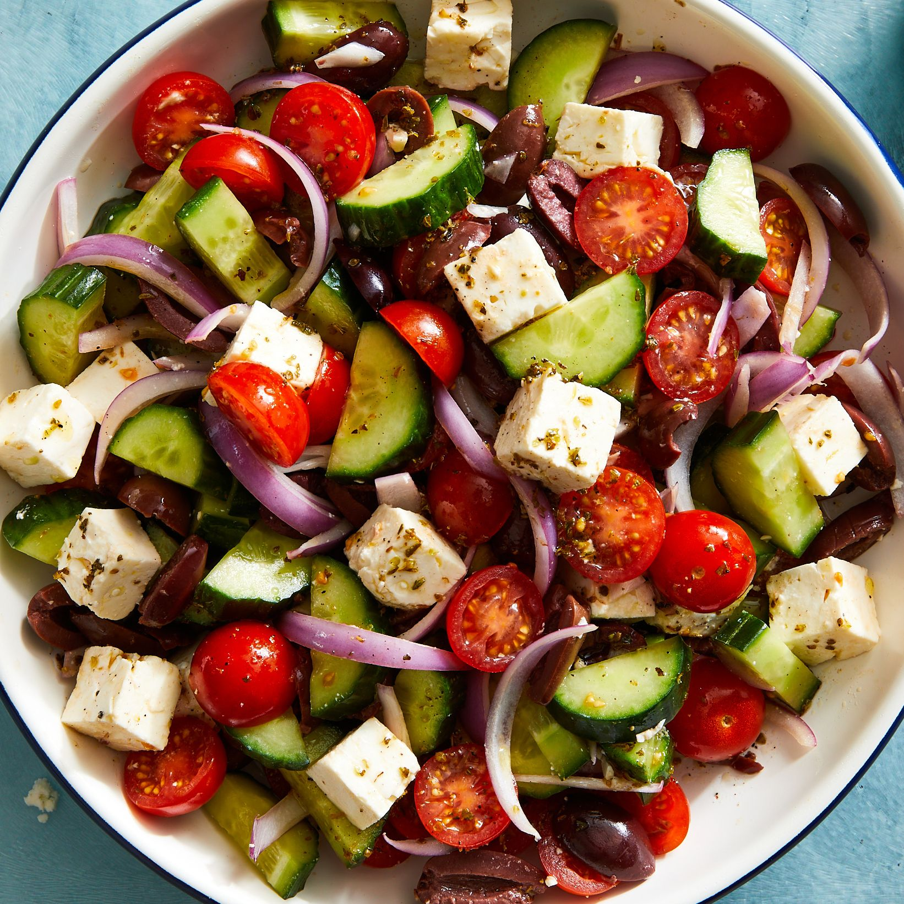

Greek Salad

Description
When you’re looking for simple, refreshing, and reliable, you’d be hard pressed to find a dish better than classic Greek salad. Filled with fresh veggies, tangy feta, and a simple dressing made of ingredients you might already have in your fridge, this bright salad is one you’ll turn to all spring and summer long. The best part? This Mediterranean recipe only takes 15 minutes to prepare, making it a perfect last-minute addition to any meal.
Ingredients
- 1 cucumber, thinly sliced into half-moons
- 1/2 red onion, thinly sliced
- 1 pt. grape or cherry tomatoes, halved
- 1 c. halved Kalamata olives
- 6 oz. feta, cut into 1/2" cubes
- 2 Tbsp. red wine vinegar
- Kosher salt
- lemon juice
- 1 tsp dried oregano
- Freshly ground black pepper
- 1/4 c. extra-virgin olive oil
Steps
- In a large bowl, toss cucumber, onion, tomatoes, and olives. Gently fold in feta.
- In a small bowl, whisk vinegar, lemon juice, and oregano until combined; season with salt and pepper. Slowly stream in oil, whisking until dressing is smooth and emulsified.
- Drizzle dressing over salad and toss again to combine.